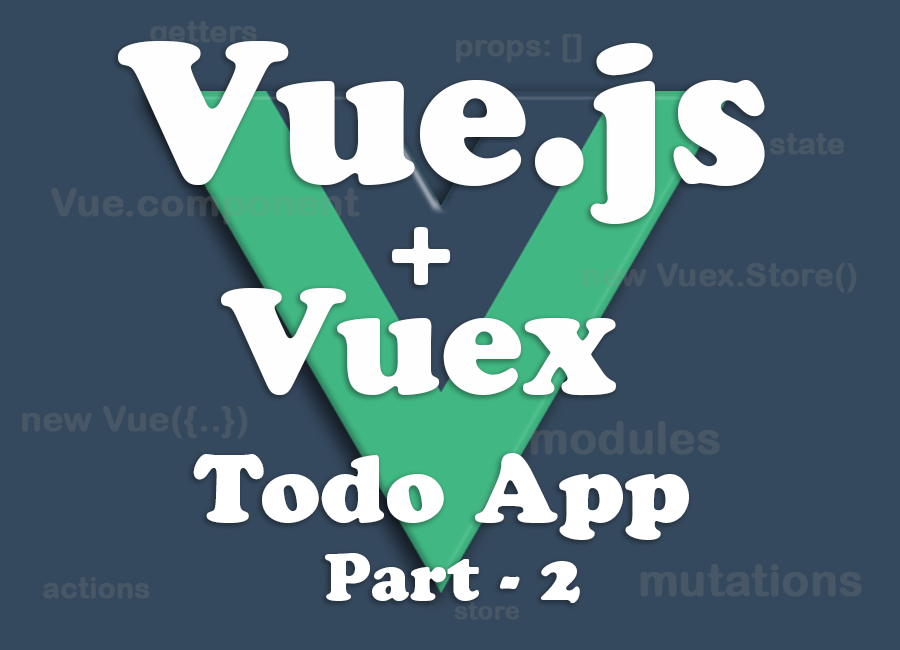

By Muthu Kumaran - June 28, 2017
By Muthu Kumaran - June 28, 2017
PART 2: With Components, and State Management.
Hope you have read VUE.JS - SIMPLE TODO APP - PART 1. It's a continuation which I'm gonna cover Todo APP with Components and State Management using Vuex
Now we have built a Todo App. Let's using Vue Components to self-contain the app and make it reusable.
The component system is another important concept in Vue, because it’s an abstraction that allows us to build large-scale applications composed of small, self-contained, and often reusable components.
In Vue, a component is essentially a Vue instance with pre-defined options. Registering a component in Vue is straightforward:
// Define a new component called `my-component`
Vue.component('my-component', {
template: '<li>This is a component</li>'
})
Now you can compose it in another component’s template:
<ol>
<!-- Create an instance of the `my-component` component -->
<my-component></my-component>
</ol>
This will render the text This is a component.
To learn more about Vue Components, Composing with Components
Let's modify the previous Todo App code to create components. I'm going to create two components, <todo-component> and <todo-list>.
<todo-component> - will have all Todo App markup and Todo List items (<todo-list>) will be a child component
<todo-list> - will hold Todo List items markup. Also used in the parent component <todo-component>
Let's update the markup
<script src="https://unpkg.com/vue"></script>
<div id="todoApp">
<todo-component></todo-component>
</div>
Let's create <todo-component>.
Vue.component('todo-component', {
template: `
<div>
<h3>{{message}}</h3>
<form name="todo-form" method="post" action="" v-on:submit.prevent="addTask">
<input name="add-todo" v-model="addTodo" type="text" v-bind:class="{error: hasError}"/>
<button type="submit">Add</button>
</form>
<div class="todo-lists" v-if="lists.length">
<h3>My Todo Tasks</h3>
<ul>
<todo-list v-for="list in filterLists" v-bind:todo="list" v-bind:key="list.id"></todo-list>
</ul>
</div>
</div>`
});
<todo-list> component,
Vue.component('todo-list', {
props: ['todo'],
template: `
<li>
<input type="checkbox" v-on:change="completeTask(todo)" v-bind:checked="todo.isComplete"/>
<span class="title" contenteditable="true" v-on:keydown.enter="updateTask($event, todo)" v-on:blur="updateTask($event, todo)" v-bind:class="{completed: todo.isComplete}">{{todo.title}}</span>
<span class="remove" v-on:click="removeTask(todo)">x</span>
</li>`
});
props - Every component instance has its own isolated scope. This means you cannot (and should not) directly reference parent data in a child component’s template. Data can be passed down to child components using props. A prop is a custom attribute for passing information from parent components. A child component needs to explicitly declare the props it expects to receive using the props option
// <todo-list> from parent component
<todo-list v-for="list in filterLists" v-bind:todo="list" v-bind:key="list.id"></todo-list>
Where we bind v-bind:todo and v-bind:key which are passed down to child components using props (props: ['todo', 'key']).
To learn more about Vue Components.
Vuex is a state management pattern + library for Vue.js applications. It serves as a centralized store for all the components in an application, with rules ensuring that the state can only be mutated in a predictable fashion. Inspired by Flux, Redux and The Elm Architecture
To use Vuex, include the below script after Vue and it will install itself automatically:
<script src="https://unpkg.com/vue"></script>
<script src="https://unpkg.com/vuex"></script>
First, we'll need to create a store. A store is essentially a global reactive object which follows the normal Vue reactivity patterns. It cannot be accessed or modified directly in order to ensure a consistent state and allow easy tracking of changes. Here's a sample store,
const store = new Vuex.Store({
state:{
},
getters:{ //similar to computed but this will cache for reuse
},
mutations:{
},
actions: {
}
});
1. state
This is where you define your data structure for your app. You can also set initial state here. For the Todo App, initial state should be,
state:{
message: 'Welcome to Todo App with State Management',
lists: [],
hasError: false
},
Yes, the data structure is similar to PART1: Simple Todo App.
To access the store in your components, use this.$store. So, this.$store.state.message will return Welcome to Todo App with State Management.
2. getters
Vuex allows us to define "getters" in the store. You can think of them as computed properties for stores. Like computed properties, a getter's result is cached based on its dependencies, and will only re-evaluate when some of its dependencies have changed.
Getters will receive the state as their 1st argument:
getters:{
filterLists: function(state){
return _.orderBy(state.lists, ['isComplete', false])
}
},
Now we have movedfilterLists to the Vuex store. In components, it can be accessed through this.$store.getters.filterLists
3. mutations
The only way to actually change state in a Vuex store is by committing a mutation. Vuex mutations are very similar to events: each mutation has a string type and a handler. The handler function is where we perform actual state modifications, and it will receive the state as the first argument and payload as second argument
In most cases, the payload should be an object so that it can contain multiple fields, and the recorded mutation will also be more descriptive.
For the Todo App, we will move all existing methods to the mutations,
mutations:{
addTask: function(state, payload){
if(!payload.title){
state.hasError = true;
return;
}
state.hasError = false;
state.lists.push({id:state.lists.length+1, title: payload.title, isComplete: false});
},
updateTask: function(state, payload){
var i = _.findIndex(state.lists, payload.list);
if(!state.lists[i]) return;
if(payload.targetElem.innerText.trim() !== ''){
state.lists[i].title = payload.targetElem.innerText;
}else{
payload.targetElem.innerText = state.lists[i].title;
}
payload.targetElem.blur();
},
completeTask: function(state, payload){
var index = _.findIndex(state.lists, payload.list);
state.lists[index].isComplete = !state.lists[index].isComplete;
},
removeTask: function(state, payload){
var index = _.findIndex(state.lists, payload.list);
state.lists.splice(index, 1);
}
},
In the component, you cannot directly call a mutation handler. Think of it more like event registration: "When a mutation with type addTask is triggered, call this handler." To invoke a mutation handler, you need to call this.$store.commit with its type:
this.$store.commit('addTask')To commit with payload then it should be,
this.$store.commit('updateTask', {targetElem: e.target, list: list});
One important rule to remember is that mutation handler functions must be synchronous. It's cannot handle asynchronous operations. To handle asynchronous operations, let's use Actions.
4. actions
Actions are similar to mutations, the differences being that:
Action handlers receive a context object which exposes the same set of methods/properties on the store instance, so you can call context.commit to commit a mutation, or access the state and getters via context.state and context.getters.
actions: {
addTask: function(context, payload){
context.commit('addTask', payload);
},
updateTask: function(context, payload){
context.commit('updateTask', payload);
},
completeTask: function(context, payload){
context.commit('completeTask', payload);
},
removeTask: function(context, payload){
context.commit('removeTask', payload);
}
}
Actions are triggered with the this.$store.dispatch method:
this.$store.dispatch('addTask', {title: this.addTodoInput});This may look dumb at first sight: if we want to add a Todo item, why don't we just call this.$store.commit('addTask') directly? Well, remember that mutations must be synchronous? Actions don't. We can perform asynchronous operations inside an action
5. Modules
Modules are useful when you are working on big projects. Todo is a small app and we are not using modules. You can learn from here, Modules.
Let's put all the pieces together and the Todo App store will be:
const store = new Vuex.Store({
state:{
message: 'Welcome to Todo App with State Management',
lists: [],
hasError: false
},
getters:{ //similar to computed but this will cache for reuse
filterLists: function(state){
return _.orderBy(state.lists, ['isComplete', false])
}
},
mutations:{
addTask: function(state, payload){
if(!payload.title){
state.hasError = true;
return;
}
state.hasError = false;
state.lists.push({id:state.lists.length+1, title: payload.title, isComplete: false});
},
updateTask: function(state, payload){
var i = _.findIndex(state.lists, payload.list);
if(!state.lists[i]) return;//close button and content-editable are close-by and both are triggered at once causes JS error.
if(payload.targetElem.innerText.trim() !== ''){
state.lists[i].title = payload.targetElem.innerText;
}else{
payload.targetElem.innerText = state.lists[i].title;
}
payload.targetElem.blur();
},
completeTask: function(state, payload){
var index = _.findIndex(state.lists, payload.list);
state.lists[index].isComplete = !state.lists[index].isComplete;
},
removeTask: function(state, payload){
var index = _.findIndex(state.lists, payload.list);
state.lists.splice(index, 1);
}
},
actions: {
addTask: function(context, payload){
context.commit('addTask', payload);
},
updateTask: function(context, payload){
context.commit('updateTask', payload);
},
completeTask: function(context, payload){
context.commit('completeTask', payload);
},
removeTask: function(context, payload){
context.commit('removeTask', payload);
}
}
})
store into Todo AppNow we have a store ready and we need to find a way to inject it into the Todo App. Vuex provides a mechanism to "inject" the store into all child components from the root component with the store option.
Let's update the Todo app Vue constructor to inject the store:
var todoApp = new Vue({
el: '#todoApp',
store
});
By providing the store option to the root instance, the store will be injected into all child components of the root and will be available on them as this.$store.
Let's update the components to dispatch the actions.
todo-component Component
Vue.component('todo-component', {
template: `
<div><h3>{{message}}</h3>
<form name="todo-form" method="post" action="" v-on:submit.prevent="addTask">
<input name="add-todo" v-model="addTodo" type="text" v-bind:class="{error: hasError}"/>
<button type="submit">Add</button>
</form>
<div class="todo-lists" v-if="lists.length">
<h3>My Todo Tasks</h3>
<ul>
<todo-list v-for="list in filterLists" v-bind:todo="list" v-bind:key="list.id"></todo-list>
</ul>
</div>
</div>
`,
data: function(){
return{
addTodoInput: ''
}
},
computed: {
message: function(){
return this.$store.state.message
},
lists: function(){
return this.$store.state.lists
},
hasError: function(){
return this.$store.state.hasError
},
filterLists: function(){
return this.$store.getters.filterLists;
}
},
methods: {
addTask: function(){
this.$store.dispatch('addTask', {title:this.addTodoInput});
this.addTodoInput = "";
}
}
});
Here you might have notice two things,
1. data - Must be a function. Dont' get confused with Vue constructor data which is an object.
2. addTodoInput - It's a Vue model and I don't want this to be part of store.
todo-list Component
Now we are updating todo-list component to dispatch actions.
Vue.component('todo-list', {
props: ['todo'],
template: `
<li>
<input type="checkbox" v-on:change="completeTask(todo)" v-bind:checked="todo.isComplete"/>
<span class="title" contenteditable="true" v-on:keydown.enter="updateTask($event, todo)" v-on:blur="updateTask($event, todo)" v-bind:class="{completed: todo.isComplete}">{{todo.title}}</span>
<span class="remove" v-on:click="removeTask(todo)">x</span>
</li>
`,
methods:{
removeTask: function(list){
this.$store.dispatch('removeTask', {list});
},
updateTask: function(e, list){
e.preventDefault();
this.$store.dispatch('updateTask', {targetElem:e.target, list});
},
completeTask: function(list){
this.$store.dispatch('completeTask', {list})
}
}
});
Finally, we have come to end. Now the simple Todo app is componentized and using Vuex to manage the states.
Complete HTML, CSS, and JavaScript code for Todo App will be available at my CodePen.
Here's the Todo App demo:
See the Pen Todo App with Vuex - State Management - Vue.js by Muthu Kumaran (@mkumaran) on CodePen.
If you like this, please share
Comments
Thank you for visiting my page. Please shares your views and suggestion in the comment box below.